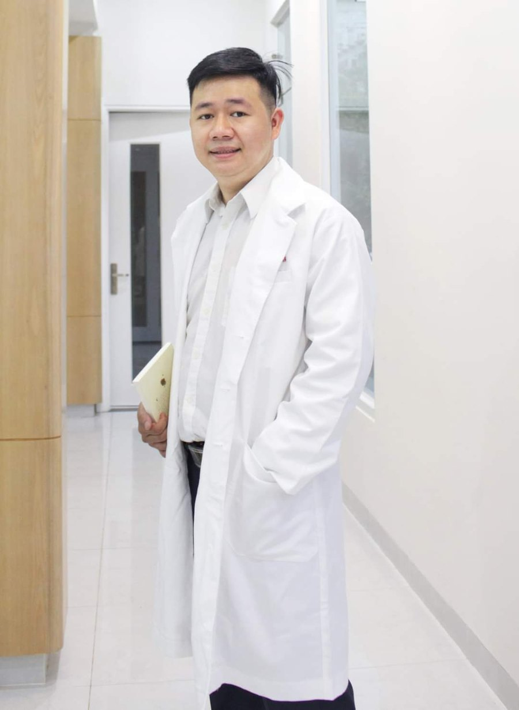

BS HOÀNG NHÂN
Chuyên môn là nền tảng.
Sự tin tưởng bắt đầu từ lần gặp đầu tiên.
Hoàng Nhân

Tôi là Hoàng Nhân, bác sĩ Răng Hàm Mặt. Tại nha khoa, chúng tôi muốn bạn hiểu rõ tình trạng răng và thấy thoải mái khi nói điều mình lo.
Lắng nghe trước. Giải thích rõ. Cùng bạn chọn kế hoạch phù hợp với tình trạng răng, mong muốn và điều kiện thực tế.
- ĐÀO TẠO
- Bác sĩ nội trú
Đại học Y Dược TP Hồ Chí Minh - HỌC VỊ
- Thạc sĩ
- TẬP TRUNG
- Răng khôn · Cắt nướu thẩm mỹ
Trồng răng Implant · Bọc răng sứ